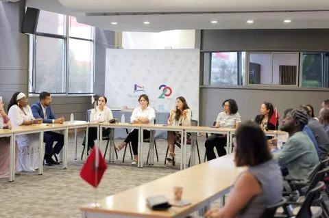

Gestion de projet
Coordination, suivi-évaluation, due diligence et relation avec les bailleurs, de l’appui SIFA à l’organisation d’événements.

Lomé, Togo
Responsable Projet & IT Community Manager
Responsable du programme Executive MBA · Lomé Business School
Je pilote des projets qui allient innovation, technologies numériques, formation et communication digitale, auprès d’institutions, d’entreprises et de bailleurs internationaux, notamment AUDA-NEPAD et KfW.
Profil
Responsable Projet & IT Community Manager à Lomé Business School depuis janvier 2022, je pilote des programmes de formation, d’incubation et de transformation digitale. Je suis également Responsable du programme Executive MBA, mené avec Eklore Ed (France).
Je coordonne des programmes de compétences numériques et d’IA pour les jeunes et les commerçantes de marché, notamment avec la mairie du Golfe 2, et j’apporte un appui au projet SIFA – Togo Digital Hub (Skills Initiative for Africa, AUDA-NEPAD / KfW).
Je conçois aussi les visuels, flyers et supports de communication de l’école, et j’en anime les réseaux sociaux avec une équipe étudiante de production de contenus. Diplômé en administration des systèmes et réseaux à l’Université de Lomé, je prépare un Master Management de projet et Transformation digitale à l’Université Senghor, en partenariat avec LBS. J’enseigne « Outils numériques & efficacité professionnelle » en Bachelor 1 Management.
Champs d’action
Coordination, suivi-évaluation, due diligence et relation avec les bailleurs, de l’appui SIFA à l’organisation d’événements.
Programmes de compétences numériques et d’IA, enseignement des outils ChatGPT, Copilot, Gemini et Claude.
Animation des comptes de l’école et coordination d’une équipe étudiante de contenus, avec analyse de performance.
Conception de visuels, flyers et affiches pour les campagnes et événements de Lomé Business School (Photoshop, Illustrator, Canva).
Cours en Bachelor 1 Management, formations professionnelles, mentorat d’équipes étudiantes et coaching de porteurs de projets.
Travail avec des collectivités, des entreprises, des incubateurs et des bailleurs, au Togo et à l’international.
Réseaux sociaux
Croissance des indicateurs des réseaux de l’école
Comptes Instagram et TikTok de l’école créés et développés de zéro, de bout en bout. En 2021, comme Chargé IT & Community Manager, j’ai conçu les visuels, mis en place et animé les comptes de l’école (Instagram, TikTok, Facebook et LinkedIn).
Depuis 2022, je constitue et coordonne une équipe étudiante de production de contenus. Je conçois les supports graphiques (flyers, affiches), j’analyse les performances et j’ajuste la stratégie.
Le CV fait état d’une croissance de +50 % des indicateurs en 6 mois, sur trois dimensions suivies ensemble : les abonnés, le taux d’engagement et la portée des publications. Les chiffres par réseau n’y sont pas détaillés.
Design & communication
Je conçois des visuels, flyers, brochures et supports de communication pour Lomé Business School, et j’en assure le déploiement sur les réseaux sociaux. Une sélection de campagnes, d’affiches et de pages de brochure, dans des styles et des thématiques variés — photo plein cadre, éditorial ou typographique.
Parcours
Janvier 2022 – aujourd’hui
Lomé, Togo
Lomé Business School (LBS) — aussi Responsable du programme Executive MBA (depuis 2024)
Janvier 2021 – décembre 2021
Lomé, Togo
Lomé Business School (LBS)
Juin 2020 – décembre 2020
Lomé, Togo
Lomé Business School (LBS)
Janvier 2020 – mai 2020
Lomé, Togo
IFAID Togo (Institut de Formation et d’Appui aux Initiatives de Développement)
Sept. 2018 – déc. 2018
Fév. 2019 – mai 2019
Lomé, Togo
Moov Africa Togo (ex-Atlantique Telecom Togo / Moov Togo)
Réalisations
Coordination d’appui de ce programme de formation au digital (Skills Initiative for Africa), d’environ 1,6 M€, à Lomé, Kpalimé, Atakpamé, Sokodé, Kara et Dapaong.
Programmes de formation gratuits auprès des jeunes et des commerçantes de marché.
Responsable du programme : recrutement, suivi des apprenants et coordination de la formation avec des professeurs internationaux et locaux. La cohorte 2025 compte 10 dirigeants issus de secteurs variés.
Accompagnement des porteurs de projets : 3 projets mis sur le marché ; équipes étudiantes lauréates de Google CSquared Woézon, Le Flambeau – Smart Junior Entreprise et Togo IT Days. Avec KREACITY, LBS a été l’un des trois incubateurs togolais de Femmpact II, avec une immersion au Maroc (Rabat, Ben Guerir et Casablanca).
Représentant de LBS pour ses 4 équipes au GMC Togo 2026 (phase nationale du 19 au 23 octobre, finale internationale à Lagos du 11 au 13 novembre). Formation et mentorat de l’équipe LBS vainqueur du GMC Togo, qualifiée pour la finale à Lagos.
Co-pilotage, avec Tod’Aers Global Network, de six articles de recherche étudiants, en cours de publication : détection de deepfakes, phishing par SMS, jumeaux numériques en santé, UI/UX, intégration UEMOA-CEMAC et mutualisation logistique au Sahel.
Tournées d’orientation dans le cadre d’Impact Digital (février 2023, mars 2024 et mai 2025). En mars 2024 : 15 lycées et plus de 1 500 lycéens. Du 12 au 17 mai 2025 : 5 villes (Kpalimé, Atakpamé, Sokodé, Kara et Dapaong), 18 écoles et plus de 2 500 lycéens.
Projets en détail
Écosystème
Ouverture

En 2025, j’ai représenté Lomé Business School et son incubateur KREACITY dans le cadre du programme Femmpact II au Maroc, entre Rabat, Ben Guerir et Casablanca. KREACITY a été l’un des trois incubateurs togolais retenus pour ce programme de renforcement de capacités.
Au programme de cette mission : la découverte d’un écosystème entrepreneurial dense, et des échanges avec des structures d’accompagnement, de recherche et de formation.
Les photographies de cette section sont tirées du post LinkedIn d’octobre 2025.



Méthode
Je travaille dans un service de trois personnes à Lomé Business School, qui organise de nombreuses activités étudiantes et associatives. L’enjeu est de rester coordonné, de répartir clairement les rôles et de tenir le rythme tout au long de l’année.
J’ai formé et mentoré l’équipe LBS vainqueur du GMC Togo, qualifiée pour la finale à Lagos. Je suis aussi le représentant de l’école pour ses quatre équipes étudiantes sur cette compétition.
Avec Tod’Aers Global Network, j’ai co-piloté une équipe d’étudiants de LBS qui a rédigé six articles de recherche, aujourd’hui en cours de publication. Le travail se fait en suivi régulier, sujet par sujet, jusqu’au livrable.
J’enseigne « Outils numériques & efficacité professionnelle » aux quatre groupes de Bachelor 1 Management, et j’y fais notamment travailler ChatGPT, Microsoft Copilot, Gemini et Claude. Je coache aussi les porteurs de projets de KREACITY.
Que ce soit avec la mairie du Golfe 2, les bailleurs de SIFA, Eklore Ed ou les entreprises présentes à INTELO et Impact Digital, je relie les besoins de terrain, le calendrier de l’école et les attendus des partenaires.
Sur les réseaux sociaux, je ne fais pas tout seul : je constitue et j’anime une équipe étudiante de production, je conçois les visuels, puis j’analyse les résultats pour ajuster la ligne. C’est un travail d’équipe, avec un cap commun.
Savoir-faire
Planification, coordination et suivi, suivi-évaluation, due diligence, relation avec les bailleurs et partenaires, ingénierie de formation, organisation d’événements.
Management d’équipes de jeunes, leadership, conduite du changement IT.
Windows Server, AD DS, DNS, GPO ; virtualisation (Hyper-V, VMware Workstation/ESXi, VirtualBox) ; routeurs et commutateurs Cisco ; sauvegarde (BackupPC, System Center DPM) ; maintenance et support technique.
SharePoint, Teams, Centre d’administration ; automatisation avec Power Automate.
Réseaux sociaux (TikTok, Instagram, LinkedIn, Facebook, WhatsApp), création de contenus, conception graphique (Photoshop, Illustrator, Canva), analyse de performance.
Utilisation et enseignement de ChatGPT, Microsoft Copilot, Gemini et Claude, notamment dans le cours « Outils numériques & efficacité professionnelle ».
Langues — Français : maîtrise parfaite · Anglais : niveau intermédiaire · Éwé : langue maternelle
Parcours académique
Diplômes et formation continue
Certifications et distinctions
Conférence et distinction
Engagement associatif
Recommandations
Co-fondatrice et Responsable Marketing
Directeur Général
Directeur Général
Cabinet SYNERGIE
Head of Monitoring & Evaluation
United Nations
Coordonnées disponibles sur demande.
Contact
Pour un projet, un partenariat ou un échange professionnel, écrivez-moi, appelez-moi ou retrouvez-moi sur LinkedIn et WhatsApp.
Lomé, Togo